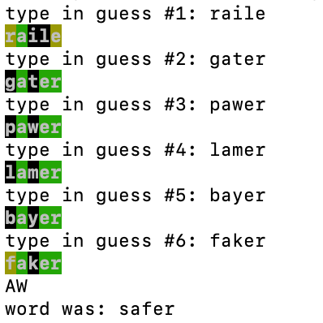

Wordle Solver
Julia Kozak - Jan 2022
So wordle is popular. I thought it would be interesting to try to make an AI that would solve for the best possible sequence of guesses to win.
The first task was to build the game. We probably all know the rules at this point, but to summarize, you try to guess a certain five-letter word in six or less guesses based on clues that the game gives you about previous guesses. If a certain letter in your guess is in the same place as it is in the correct word, it will be marked as green. If a letter is in the word but in the wrong place, it's marked as yellow. If it does not show up, it is marked as black. One thing to note about this is that if a certain letter shows up strictly once in the correct word but is included more than once in a guess, only one of the letters will actually be marked green or yellow. For instance, if your correct word is "metal" but you guess "gamma," your guess will show as gamma, not gamma. Also, there are about 13000 possible guesses with about 3000 possible correct answers, each taken from text files.
For my Java terminal version, the command line prompts you to type in a potential five-letter guess, and it will print the coloring with text background colors (you also have the option of watching the AI play).
Now for solving, the algorithm goes like this:
* For every potential guess you can make at a given turn, consider all possible
sequences of colorings you can receive in return.
* For every one of those, compute the probability of receiving that coloring,
as well as the number of potential answers you can limit your search space to
given that coloring (this gives your expected value for a given guess).
* Store all those expected values and pick the word corresponding to the lowest
one as your next guess.
* Cut down your potential answer search space based
on the sequence of colors received on your last guess (if a given answer has
a different letter in a place that is green, eliminate it, etc.).
It's clear that, with several thousand possible guesses and answers to start with as well as 243 cases to check, the search for the best first guess would take quite a while. I'd estimate 20 minutes, but I ran through this only a few times and modified my program to print the first 20 best guesses so I could tell my AI to just pick one of these each first guess (and here's a text file with the best 100 guesses if you're interested: this).
But the good thing is that the AI (kind of) gains efficiency as it cuts down its search space with each next guess. For instance, the first guess 'irate' limits the number of potential answers to about 70 on average, which is a lot better than a factor of 3000. But there's still a chance of the program being horribly inefficient when it gets one of the worse cases of colorings, plus the fact that it's still checking all 13000 possible guesses.
So, in an effort to save some time (this is also the current state of the program), the AI
cuts his potential guess search space according to the coloring as well. The problem is,
it now sometimes does this:

Hey, I do that too, but guess like "flaky" could have determined the possibilities of four
potential letters there, so chances are that wasn't the best way to go about solving. Likewise,
for cases of missing just one letter (ex. fight)
it kind of just becomes a guessing game with the rest of the possibilities.
It's definitely a lot more efficient though. A 30-40 second guess from before now takes a fraction of a second, and the average number of guesses to win is about 3 or 4.
The repo to my game/AI (also to this site) (compile Wordle.java): this